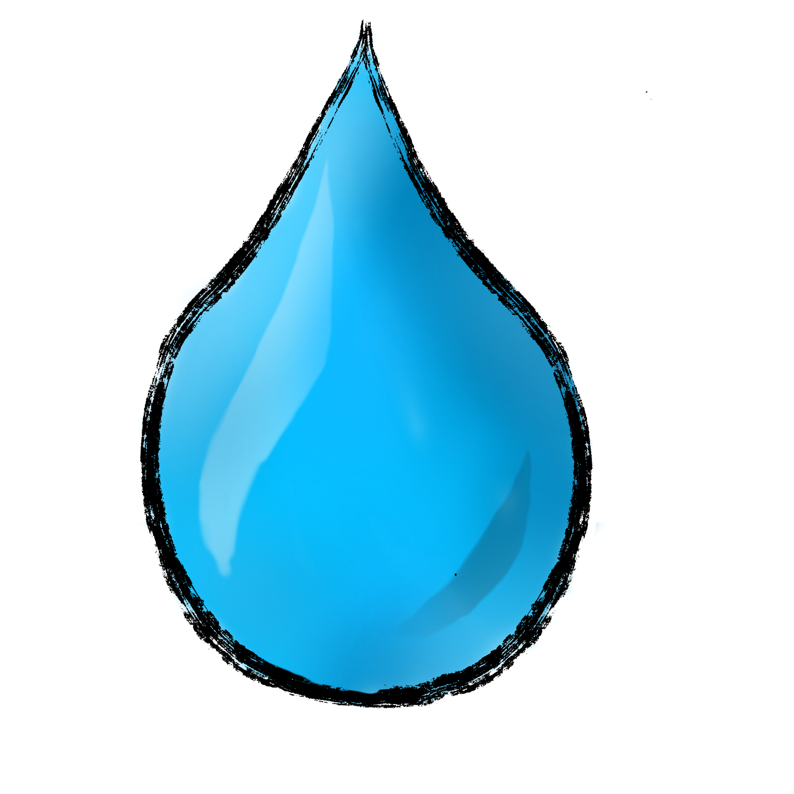
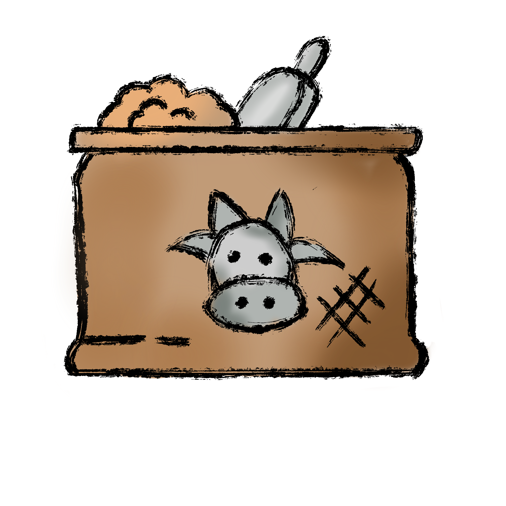

Compare land, water, and feed requirements across conventional and alternative protein sources per kilogram of edible protein.
Protein Source
Protein Amount
10kg
1 kg200 kg
Land Used
—
m²

Water Used
—
litres

Feed Required
—
kg
Land use comparison (m²)
Water use comparison (L)
Feed comparison (kg)
Data sources: Feed (true FCR per kg edible protein) from Siddiqui et al. (2024), Poelaert et al. (2022),
Lacko et al. (2024), van Huis et al. FAO (2013), and Agri Farming / A Well-Fed World FCR compilations.
Land & water values from Poore & Nemecek (2018). Beef FCR updated to 20.0 kg/kg edible protein
(raw FCR 8.0, 40% edible yield). Cricket FCR updated to 2.1 kg/kg (raw FCR 1.7, 80% edible yield).
All figures are global averages and vary by region and farming system.